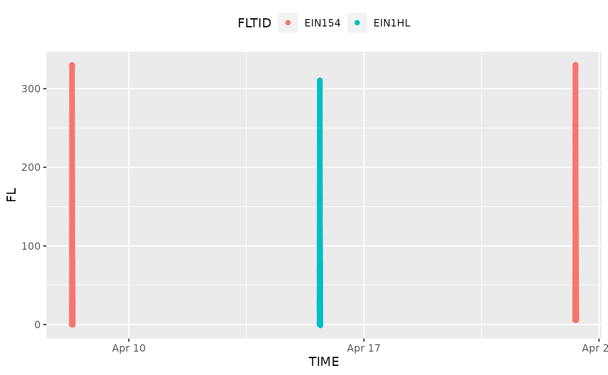

This vignette shows how to read in the source data and process it to generate the milestone table for each valid trajectory.
Overview
The 3Di algorithm defines a composite “(in)efficiency” score for each flight. The score is composed of a horizontal and vertical component.
Data Loading and Processing
Let’s load a subset of trajectories.
rq <- eidw_egll |>
standardise_traj_from_trafficlib() |>
identify_trajectory_legs() |>
make_uid()
dplyr::glimpse(rq)
#> Rows: 655,693
#> Columns: 12
#> $ UID <chr> "010204-20230424-0-MSR761", "010204-20230424-0-MSR761", "01020…
#> $ FLTID <chr> "MSR761", "MSR761", "MSR761", "MSR761", "MSR761", "MSR761", "M…
#> $ ICAO24 <chr> "010204", "010204", "010204", "010204", "010204", "010204", "0…
#> $ TIME <dttm> 2023-04-24 10:15:18, 2023-04-24 10:15:23, 2023-04-24 10:15:28…
#> $ ALT <dbl> 31975, 31975, 31950, 31975, 31975, 31950, 31950, 31950, 31950,…
#> $ LAT <dbl> 35.17268, 35.18198, 35.19028, 35.19933, 35.20750, 35.21644, 35…
#> $ LON <dbl> 27.35680, 27.35052, 27.34491, 27.33886, 27.33335, 27.32735, 27…
#> $ FL <dbl> 319.75, 319.75, 319.50, 319.75, 319.75, 319.50, 319.50, 319.50…
#> $ SEQ_ID <int> 1, 2, 3, 4, 5, 6, 7, 8, 9, 10, 11, 12, 13, 14, 15, 16, 17, 18,…
#> $ STEP <drtn> 0 secs, 5 secs, 5 secs, 5 secs, 5 secs, 5 secs, 5 secs, 5 sec…
#> $ LEG <int> 0, 0, 0, 0, 0, 0, 0, 0, 0, 0, 0, 0, 0, 0, 0, 0, 0, 0, 0, 0, 0,…
#> $ COM_UID <chr> "MSR761", "MSR761", "MSR761", "MSR761", "MSR761", "MSR761", "M…Let’s pick a random set of trajectories and plot them.
set.seed(666)
picks <- rq$UID |> unique() |> sample(3)
picks
#> [1] "4ca92d-20230415-12-EIN1HL" "4cabd2-20230408-6-EIN154"
#> [3] "4ca9bb-20230423-8-EIN154"
library(ggplot2)
rq |> dplyr::filter(UID %in% picks) |>
ggplot() +
geom_point(aes(x = TIME, y = FL, color = FLTID)) +
theme(legend.position = "top")
#> Warning: Removed 1 rows containing missing values (`geom_point()`).